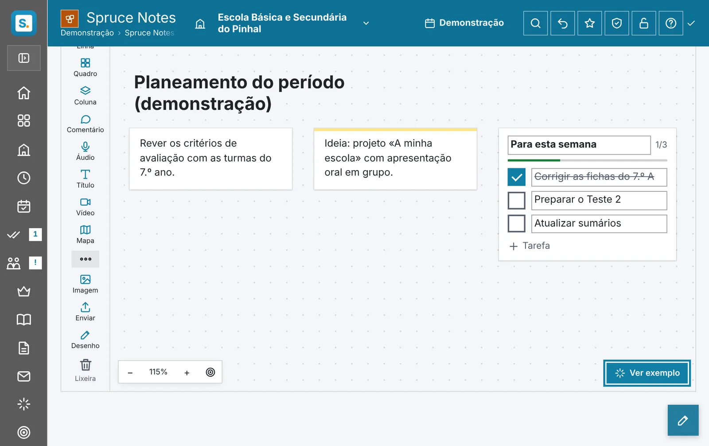

Onde as ideias da escola ganham forma
Junta notas, tarefas, imagens, ligações, ficheiros e desenhos num quadro onde vês tudo de uma vez — da ideia solta ao projeto acabado.
Incluído na EduSpruce · Entra com a tua conta Google · Sem anúncios
Visita às Fajãs 🌊
9.º B · 14 de maio · saída às 8h30 do portão principal.
Antes de partir
- Autorizações dos pais
- Reservar autocarro
- Guião de observação
- Lanche e protetor solar
docs da turma · PDF
Junto o mapa das fajãs ao guião?
Tudo o que a tua ideia precisa, num só quadro
Começa com uma nota solta. Acaba com um plano que toda a gente percebe.
Guarda a ideia antes que fuja
Uma frase no intervalo, um esboço no fim da aula, uma gravação a caminho de casa. No Spruce Notes tudo cabe no mesmo quadro, no sítio onde faz sentido.
- Notas com títulos, listas, destaques e ligações
- Desenho à mão livre, também com caneta no tablet
- Áudio, imagens e ficheiros arrastados para o quadro
Traz a internet para o teu quadro
Encontraste um vídeo, um artigo ou uma imagem perfeita para a próxima aula? Com o Spruce Notes Web Clipper guarda-la com um clique, já no quadro certo.
- Guarda páginas, imagens e texto selecionado
- Escolhe o quadro antes de guardar
- Cola endereços e imagens diretamente no quadro
Vê o panorama e os pormenores
Arruma cartões em colunas, liga ideias com setas e abre quadros dentro de quadros. Um ano letivo inteiro fica a um clique — e cada aula também.
- Colunas para empilhar e ordenar cartões
- Setas e linhas com etiquetas entre ideias
- Quadros dentro de quadros, com caminho no topo
- Cores, títulos, tabelas e listas de tarefas
✔ Ficha de registo
☐ Lupas
Trabalha com a escola à tua volta
Mostra um quadro numa reunião, deixa comentários aos colegas e organiza o jornal escolar no Jornal Notes, um espaço à parte só para ele.
- Comentários com nome e hora em qualquer cartão
- Jornal Notes para a redação do jornal escolar
- Exportar para texto e guardar cópias
Um quadro para cada coisa que acontece na escola
Professores, diretores de turma, coordenadores e equipas de projeto usam o Spruce Notes para pôr ordem no que fazem.
Começa com meio caminho feito
Escolhe um modelo, muda o que quiseres e fica com um quadro pronto em segundos.
Um clique e está no teu quadro
A extensão para o Chrome guarda páginas, imagens e texto da internet diretamente no Spruce Notes, enquanto prepara as aulas.
- Descarrega a extensão e descompacta-a
- No Chrome, abre chrome://extensions, liga o «Modo de programador» e escolhe «Carregar expandida»
- Entra com a tua conta e escolhe o quadro
Na sala, em casa ou a caminho
O Spruce Notes abre no navegador do computador, do tablet e do telemóvel. Entra com a tua conta e encontras os teus quadros onde os deixaste.

☐ Convites
A tua próxima grande ideia começa num quadro em branco
O Spruce Notes faz parte da EduSpruce. Entra com a tua conta e começa já.
Começar a criar →